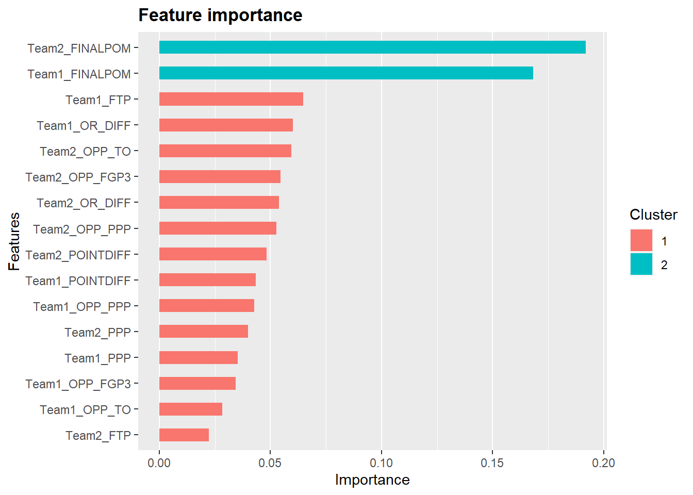
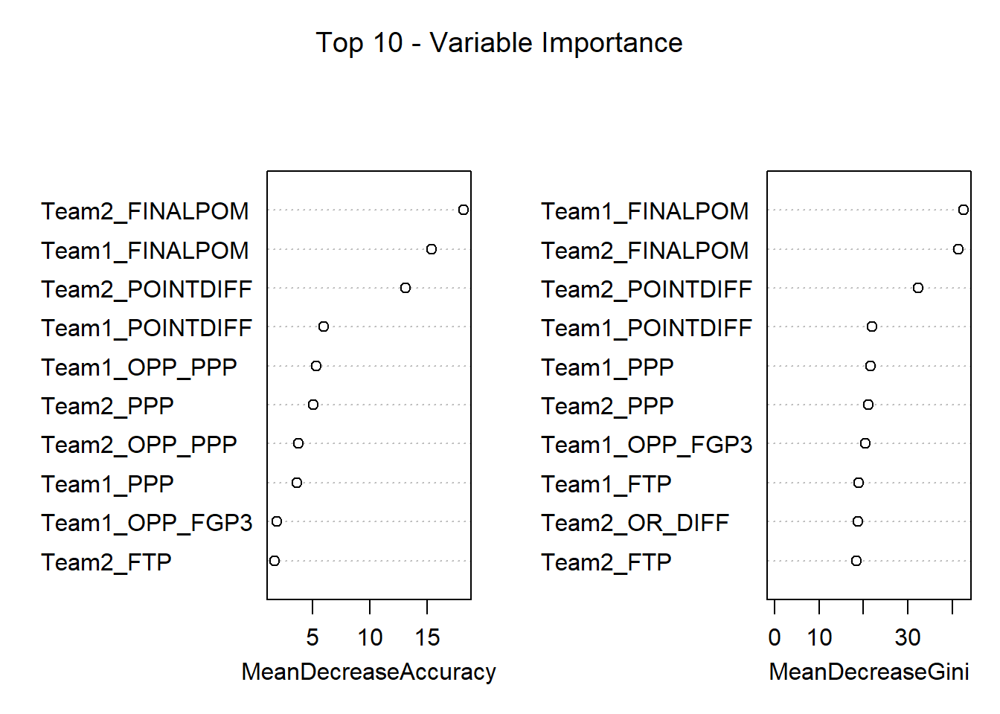
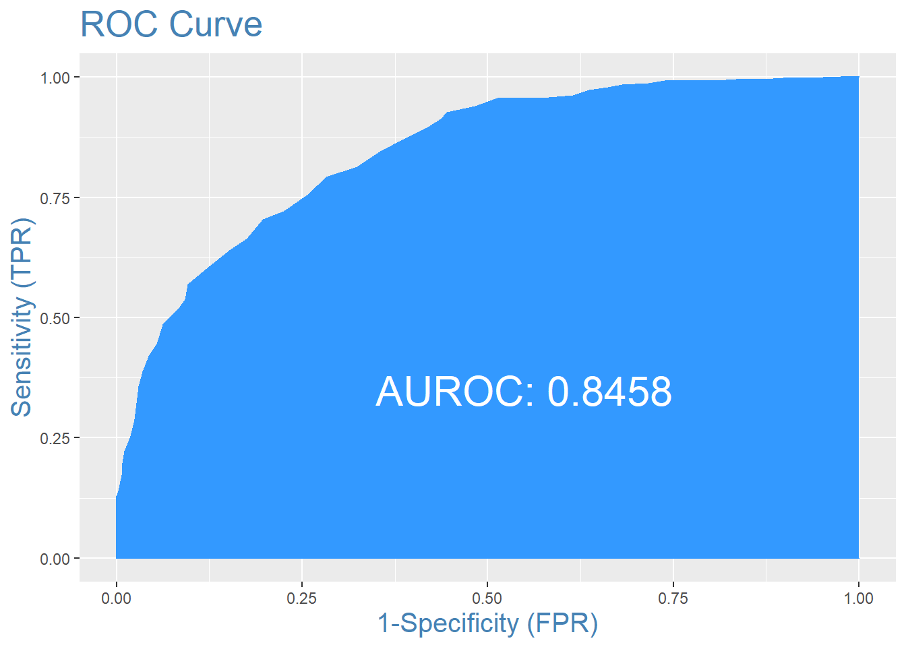

Chapter 4 Models
After data cleaning and variable selection, I created different models, including logistic regression, XGBoost, random forest, and neural networks, and scored them based on the area under the ROC curve (AROC) and misclassification rate. AROC showed the model’s performance across different cutoffs, which may not seem useful since the cutoff should be .5. However, this metric allowed me to assess model’s overall performance, not just classification. The three best models were an XGBoost model, a random forest model, and a neural net model.
4.1 XGBoost
4.1.1 Methodology and Analysis
In order to create this model, I had to tune the parameters to the dataset. I used 30-fold cross validation to pick the parameters that resulted in the lowest amount of error and prevented overfitting. However, this model still overfits the training data. The ROC curve and Confusion Matrix for this model on the training data is shown below. The model does extraordinarily well with an AROC of .94 and a classification rate of 88.32%.
| Actual Team 2 Won | Actual Team 1 Won | |
|---|---|---|
| Predicted Team 2 Won | 322 | 43 |
| Predicted Team 1 Won | 42 | 321 |
| Classification Rate | 88.32% |
The model also calculates the importance of each variable in predicting which team wins. The variables are clustered based on importance to the model, with cluster 1 in red and cluster 2 in light blue. The two most important variables were the Pomeroy rankings for the two teams. The plot below shows each variable’s importance in the model.
4.1.2 Results
Even though the model performed extremely well on the training set, it does not perform as well on the validation dataset (2019 and 2021 seasons) compared to the training dataset furthering the evidence that the model is overfitted. However, the model performs very well on the 2019 NCAA tournament compared to other models I created, correctly predicting about 76% of the games. However, the model performs poorly on the 2021 NCAA tournament, predicting only 63% of games correctly. The table below contains accuracy measures for the XGBoost model for the 2019 and 2021 tournaments.
| Classification Rate | AROC | |
|---|---|---|
| 2019 Tournament | 76.12% | 80.17% |
| 2021 Tournament | 63.64% | 66.67% |
4.2 Random Forest Model
4.2.1 Methodology and Analysis
The Random Forest model was tuned similarly to the XGBoost model using cross-validation. This model performed worse than the XGBoost model on the training set but was more aligned with model scores on the validation datasets. The AROC for the random forest was .75, and the misclassification rate was 68.82%. Below are the area under the ROC curve and Confusion matrix.
| Actual Team 2 Won | Actual Team 1 Won | |
|---|---|---|
| Predicted Team 2 Won | 246 | 109 |
| Predicted Team 1 Won | 118 | 255 |
| Classification Rate | 68.82% |
The random forest model also displays the most important variables in determining the winning team. A table of the most important variables to the model based on change in accuracy and impurity is shown below. This table also indicates the Pomeroy rankings for both teams are the most influential in determining the winner.

4.2.2 Results
The random forest model had a similar performance on the 2019 NCAA tournament compared to the training. The model predicted 73% of the games correctly during this tournament with an AROC of .7963. The model performed worse on the 2021 tournament, with a classification rate of 63% and an AROC of .714. The table below shows the model performance on the two tournaments is shown in the table below.
| Classification Rate | AROC | |
|---|---|---|
| 2019 Tournament | 73.13% | 79.63% |
| 2021 Tournament | 63.64% | 71.40% |
4.3 Neural Network
4.3.1 Methodology and Analysis
To model the training set with a neural network, I standardized the data using z-score transformations. This process allows the predictor variables to be on the same scale so that continuous variables with large values or standard deviations do not dominate the model. The neural network also needed to be optimized for the number of hidden layers and decay (a regularization parameter to prevent overfitting). The final neural net model had an AROC of .845 and a classification rate of 74.86% on the training dataset.
| Actual Team 2 Won | Actual Team 1 Won | |
|---|---|---|
| Predicted Team 2 Won | 270 | 89 |
| Predicted Team 1 Won | 94 | 275 |
| Classification Rate | 74.86% |
4.3.2 Results
The Neural Network model performed relatively averagely on the 2019 tournament but better than the two other models on the 2021 tournament. The model predicted only 70% of the games correctly in 2019 with an AROC of .7848. However, the model predicted 68% of the 2021 tournament games correctly with an AROC of .7241. A table with the accuracy measures for the Neural Network model is shown below.
| Classification Rate | AROC | |
|---|---|---|
| 2019 Tournament | 70.15% | 78.48% |
| 2021 Tournament | 68.18% | 72.41% |
4.4 Ensemble Models
Looking at all of the machine learning models, each had strengths and weaknesses in predicting certain aspects of game scenarios. Combining the insights from these models may lead to even better predictions.
4.4.1 Random Forest and Neural Network
Below are the Confusion Matrices for Neural Network and Random Forest models on the 2019 NCAA tournament. Both models performed relatively well on this tournament, with the NN classifying 70.15% of games correctly and the Random Forest classifying 73.13% of games correctly. However, the models seem to perform better in different classifying sections. The Neural Network was extremely good at predicting whether Team 1 Won, correctly classifying 85% of predicted Team 1 Wins. However, the model was worse at predicting Team 2 wins, only correctly classifying 64% of predicted Team 2 wins. The Random Forest model was more balanced, correctly classifying 74% of predicted Team 2 wins and 72% of predicted Team 1 wins. Combining the predictions from these two models may actually improve performance on new data.
| Actual Team 2 Won | Actual Team 1 Won | |
|---|---|---|
| Predicted Team 2 Won | 30 | 17 |
| Predicted Team 1 Won | 3 | 17 |
| Classification Rate | 70.15% |
| Actual Team 2 Won | Actual Team 1 Won | |
|---|---|---|
| Predicted Team 2 Won | 23 | 8 |
| Predicted Team 1 Won | 10 | 26 |
| Classification Rate | 73.13% |
When combining the predictions from both Models, model performance on the 2019 tournament is consistent but is actually better on the 2021 tournament. The RF/NN Ensemble confusion matrices for the 2019 and 2021 tournaments are shown below. This model predicts almost 70% of games correctly in the 2021 tournament compared to 68% by the Neural Network model alone and 64% by the Random Forest model alone.
| Actual Team 2 Won | Actual Team 1 Won | |
|---|---|---|
| Predicted Team 2 Won | 30 | 15 |
| Predicted Team 1 Won | 3 | 19 |
| Classification Rate | 73.13% |
| Actual Team 2 Won | Actual Team 1 Won | |
|---|---|---|
| Predicted Team 2 Won | 25 | 12 |
| Predicted Team 1 Won | 8 | 21 |
| Classification Rate | 69.7% |
4.4.2 Random Forest, Neural Network, and XGBoost
Adding the predictions from the XGBoost model may increase performance even further. The XGBoost overfits the training data and, therefore, does not perform consistently on the validation sets. However, combining these predictions to the NN/RF Ensemble model may make the predictions more generalizable while extracting as much signal from the data as possible.
The confusion matrices for the NN/RF/XG Ensemble model for the 2019 and 2021 NCAA tournaments are in the table below. This model performs the best on both the 2019 and 2021 datasets, even breaking into the 70% accuracy range for the 2021 tournament.
| Actual Team 2 Won | Actual Team 1 Won | |
|---|---|---|
| Predicted Team 2 Won | 29 | 12 |
| Predicted Team 1 Won | 4 | 22 |
| Classification Rate | 76.12% |
| Actual Team 2 Won | Actual Team 1 Won | |
|---|---|---|
| Predicted Team 2 Won | 25 | 11 |
| Predicted Team 1 Won | 8 | 22 |
| Classification Rate | 71.21% |